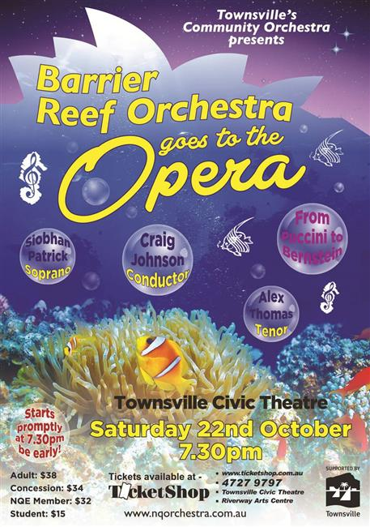

Guest Conductor:
LTCOL Craig Johnson
| Conductor: | Lt Col. Craig Johnson |
|---|---|
| Soloists: | Siobhan Patrick (soprano), Alex Thomas (tenor) |
| Compere: | Bill Laing |
| Program: | |
| Verdi: | Overture to La forza dei destino |
| Bellini: | “Eccomi…O quante volte” from I Capuleti e I Montecchi (soprano) |
| Donizetti: | Una furtive lagrima from L’elisir d’amore (tenor) |
| Puccini: | Adagio from Spartacus |
| Dvorak: | Song to the Moon from Rusalka (soprano) |
| Mozart: | Overture to The Marriage of Figaro |
| Rossini: | Overture to The Barber of Seville |
| Schonberg & Boublil: | Bring Him Home from Les Miserables (tenor) |
| Lehar: | Meine Lippen, sie kussen so heib from Giuditta (soprano) |
| Mascagni: | Intermezzo from Cavalleria Rusticana |
| Wildhorn & Bricusse: | This is the Moment from Jeckyll & Hyde |
| Bernstein: | Overture to West Side Story |
| Bernstein: | Tonight from West Side Story (soprano and tenor) |
| Verdi: | Libiamo ne’ lieti calici from La Traviata (soprano and tenor) encore |
| Concert Master: | Stephen Frewen-Lord |
|---|---|
| Rehearsal Conductors: | Andrew Ryder and Ben Fixter |
| Violin I: | Stephen Frewen-Lord, Margot Doherty, Jasmine Lee, Elena James, Julia Ramsbotham, Florence Cappler-Shillington, Jane Poon, Louise de Jersey |
| Violin II: | Alexandra Gorton, Melanie Laird, Lauren Jones, Ellen Conrad, Emily Robson, Samantha Czech, Ziying Ni, Annette Beck |
| Viola: | Lotta Lindgren, Caroline Lloyd-Doolan, Susan Fraser, Emily Matthews, Lilly Conrad, Oliver de Jersey |
| Cello: | Carla Mulligan, Ivy Wu, Carole Radovanovic, Margaret Loftus, Una Glavin, Michelle Heijneman, Sarah Lone, Leif Lundmark |
| Double Bass: | Oliver Adcock, Stephen Kluver |
| Flute: | Cassandra Cooper, Sammanuel Nguyen, Eloise Thompson |
| Piccolo: | James Hulgren |
| Oboe: | Keelie McKenzie^ Grace Ip |
| Clarinet: | Monika Ward, Rianta Belford |
| Bass Clarinet: | Jacalyn Adcock |
| Bassoon: | Sarah Hill, Helen Land |
| Horn: | Andrew Kopittke*, Angus Marsh-Brown, Amy Gutterson, Daniel Harley |
| Trumpet: | Ben Fixter, Arthur Florence, Sam Schimming |
| Trombone: | Emi Myosi, David Cox, Amy Windsor-Laws |
| Tuba: | Andrew Hodgson |
| Harp: | Leah Li |
| Keyboard: | Sally Frewen-Lord |
| Electric Guitar: | Steve Sparrow |
| Timpani: | Ruby Ansic |
| Auxiliary Percussion: | Scott Jackson, Andrew Hodgson |
Guest Conductor:
LTCOL Craig Johnson